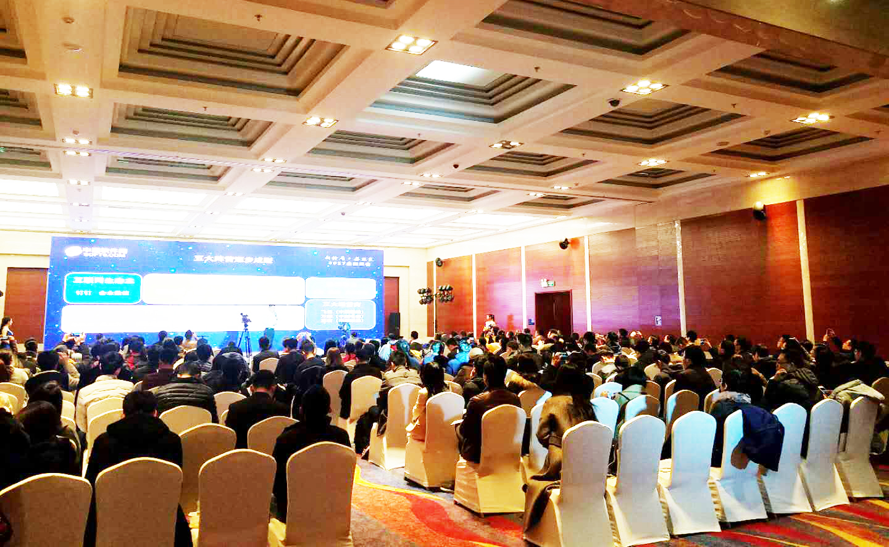
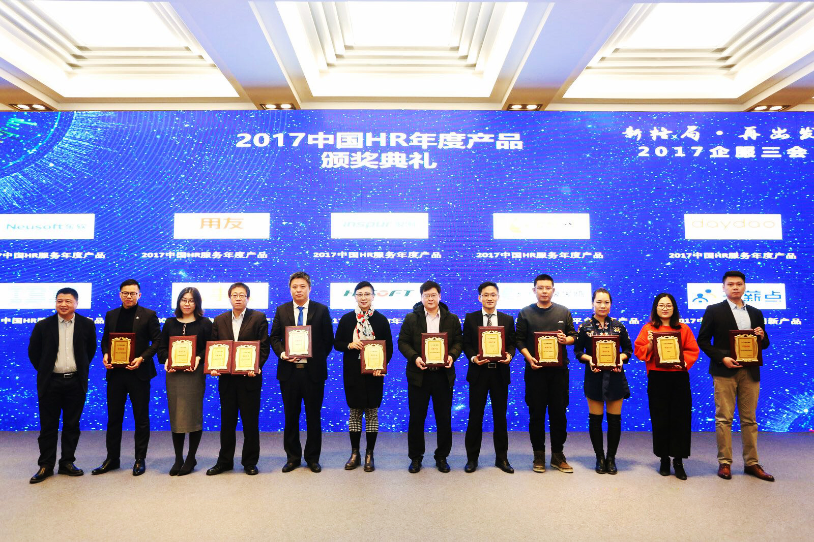

人事人荣膺“2017年中国HR洞察力峰会”两项大奖
来源：比特网2017/11/24 16:3011月21日至11月23日，由中国软件网携手海比研究主办的“企服三会”——移动办公洞察力论坛、CRM洞察力论坛、HR洞察力论坛三场盛会在北京中关村软件园国际会议中心举办，成功引爆了云办公的智能时代!人事人受邀出席并荣获“2017中国HR服务年度产品”、“2017中国HR服务年度厂商”两项大奖!

人事人成功摘得两项大奖
11月21日-23日，持续3天的顶级盛会，30个议题、业界主流厂商集体亮相，大咖云集激荡洞见;3大深度报告，《2017中国移动办公男神报告》《2017中国CRM市场研究报告》《2017中国HR服务市场研究报告》全面解析行业核心数据，洞察变化背后的逻辑与趋势;业内专家逐一梳理业内大事件，笑谈风云变化，并进行年度评选，为王者加冕。现场更有机器人、无人机、VR/AR等前沿技术应用，黑科技现场互动。

人事人作为人力资源行业领先企业受邀出席活动，并且在23日的颁奖典礼中，基于对产品创新、市场地位、客户口碑等要素的充分评估，本次评奖委员会将 “2017中国HR服务年度厂商”、以及“2017中国HR服务年度产品”两项大奖授予了人事人，人事人集团总裁王铠、副总裁张一鸣分别上台领奖。

人事人荣膺2017中国HR年度产品 人事人副总裁张一鸣(右四)上台领奖
说起HR服务领域，典型应用场景正在被逐渐整合，一体化平台能否担负起HR服务的大任?HR领域卡位基本完成，窗口逐渐缩小，后入者如何突破重围，实现跨越式发展?就此，人事人总裁王铠在圆桌会议上表示，2018年HR服务领域的发展是新产品、新技术的发展，同时更离不开我们不断挖掘的新市场与新用户。同时表示，人事人在HR服务领域的发展会坚持科技改变人力资源的发展理念。
人事人总裁王铠参加圆桌会议并讲话
纵观人事人的发展轨迹，旗下的人力服务机构最早的成立于2008年，并于2015年起开始对多家人力公司进行整合。业务目前已覆盖社保服务、薪酬优化、商业流程外包、医疗健康、福利规划等多项业务。同年其标准的移动化一站式人力资源管理在线服务平台SAAS产品HCM也正式上线，为客户提供“技术平台+解决方案+业务服务”综合化3A服务体系。同时可以根据企业具体情况定制化的输出解决方案，人工智能化处理。切实解决了企业用工成本高等一系列问题。
目前，人事人已在全国375个城市实现了业务全覆盖，并在北京、上海、广州、杭州、南京等地设有13家直营机构，累计服务超过1万家企业。
文章来源：http://news.chinabyte.com/csgg/125/14361625.shtml